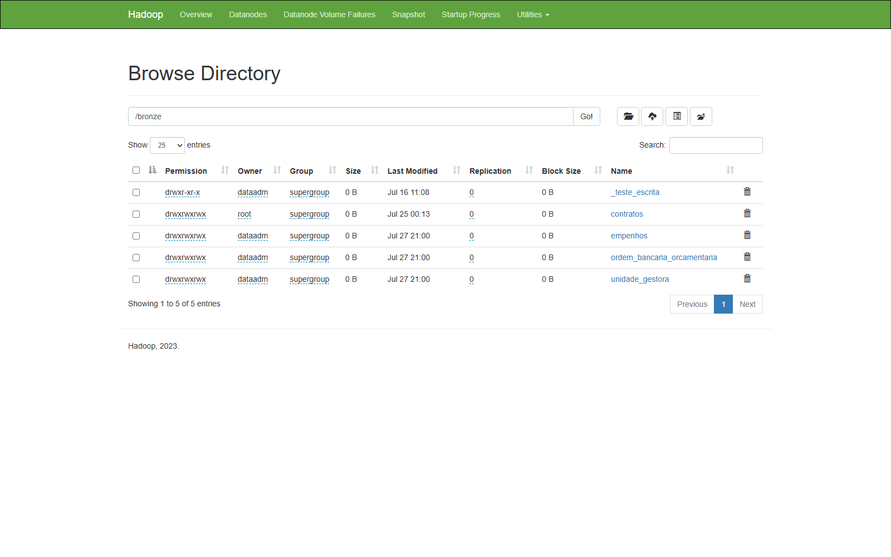
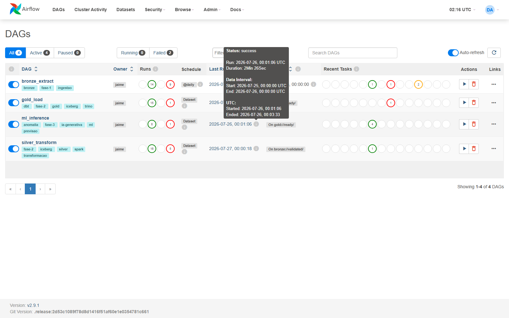
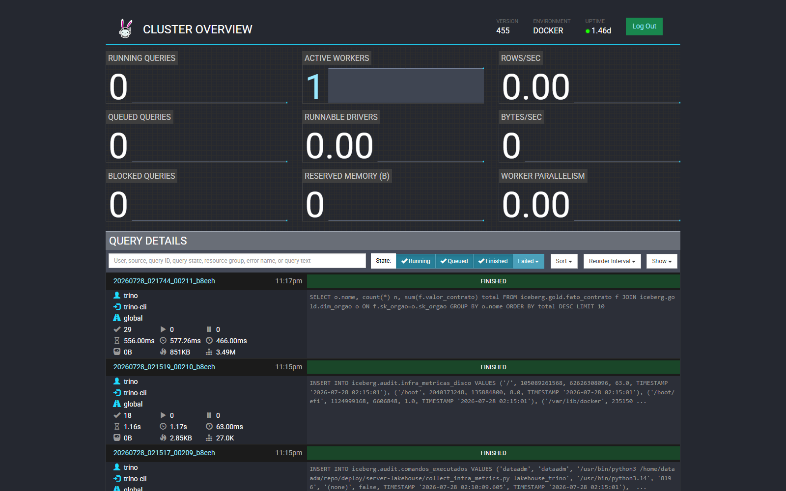
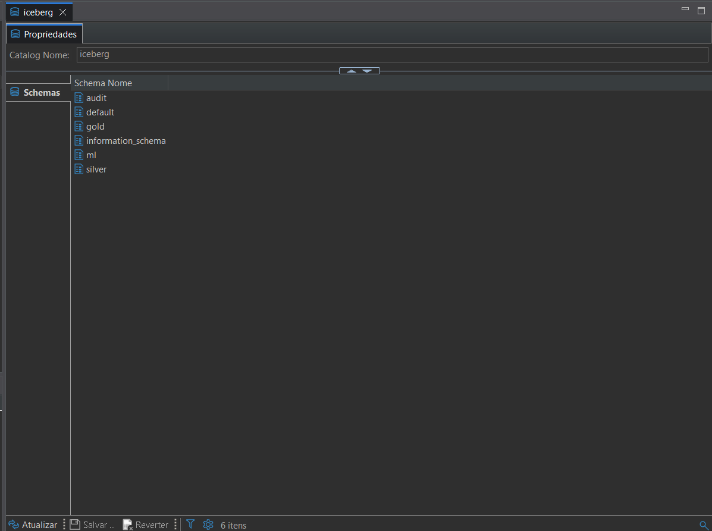
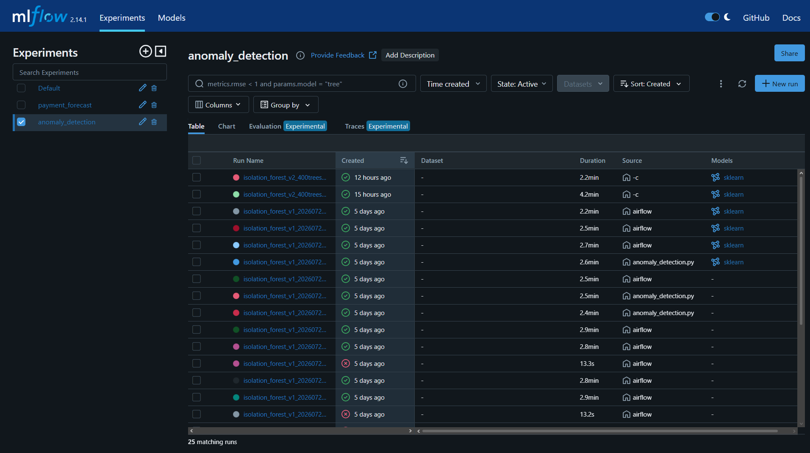

Ceará Transparente
Pipeline de Dados e IA
De duas fontes públicas sem trilha de auditoria a um lakehouse completo (Bronze → Silver → Gold), com modelos de Machine Learning e um componente de IA generativa rodando em produção, orquestrados de ponta a ponta.
Equipe: Jaime · Nara · Carlos · Fernanda · Benjamim
Um laboratório real, não uma maquete
Escopo dos dados
2022 a 2026 · cerca de 3 milhões de registros processados (1,38M empenhos + 1,40M ordens bancárias + 216 mil contratos), extraídos, validados e versionados automaticamente, todos os dias.
Laboratório de testes e experimentos
Nada vai para produção sem ser testado antes: o ambiente completo sobe do zero a cada execução de CI, e qualquer mudança arriscada é reproduzida antes num ambiente isolado, nunca direto em produção.
Servidor Ubuntu (acesso via SSH)
ssh dataadm@100.69.31.14, alcançável só pela
rede privada Tailscale do time, nunca exposto à
internet aberta. 24h no ar, uso concomitante,
por isso existe uma auditoria de acesso própria (sessão SSH +
comando executado, mesmo via sudo).
Da entrega automatizada à organização do trabalho
Integração e entrega contínua
6 jobs de CI, em paralelo, a cada push
lint, Ruff (check + format)
tests, suíte leve, tudo mockado
streamlit-smoke, AppTest do painel, Trino mockado
spark-tests, Spark+Iceberg local, idempotência do MERGE
dbt, parse dos modelos da Gold
dbt-integration, build real contra Trino+Iceberg+HMS efêmero
Deploy (só com os 6 jobs verdes, só na main)
Job de deploy entra na rede privada do
servidor via SSH sobre Tailscale (chave dedicada, restrita ao script de deploy) e aplica o
código em segundos. Camada extra: auto-sync.py roda em cron no servidor a cada
15min e só aplica se a Checks API do GitHub confirmar CI verde.
Gestão do projeto (GitHub)
Issues
Rastreamento de tarefas e pendências do time (ex: prazo final, escolha de ferramenta de dataviz), histórico de quando cada decisão foi aberta e fechada.
Projects
Quadro Kanban acompanhando o andamento das frentes de trabalho abertas, em progresso e concluídas.
Branches + Pull Requests
Branch por frente de trabalho, revisão via PR
antes do merge na main, inclusive esta apresentação, slide a slide.
Duas fontes públicas, sem trilha de auditoria
API REST Ceará Transparente (contratos, paginada) +
PostgreSQL de origem (empenhos,
ordem_bancaria_orcamentaria, unidade_gestora),
nenhuma delas pensada para virar base analítica de origem.
Análises possíveis
Execução financeira (75,1% do valor contratado já pago), ranking de órgãos por valor, distribuição por modalidade de contratação, série temporal por ano/trimestre, contratos emergenciais (2.934 de 216.358).
Investigação profunda (ML)
Contrato tem valor/prazo/modalidade fora do padrão? Quanto um órgão deve pagar no próximo trimestre? São perguntas que consulta SQL sozinha não responde bem, gancho direto pros dois modelos de Machine Learning (ver slide "Machine Learning").
Problemas reais na fonte
Nenhuma tabela tem chave primária declarada, datas vêm como texto solto, a própria API tem um erro de digitação num campo-chave, e as chaves que ligam as duas fontes são fracas (só ~6% de correspondência real).
Cada ferramenta resolve um problema real
Fontes (API + Postgres) → Bronze (HDFS) → Silver (Spark + Iceberg) → Gold (dbt + Trino) → Consumo (Superset · Streamlit · notebooks)
HDFS
Storage do Bronze e do warehouse Iceberg. Não trocamos por S3/MinIO: já existia na infra do curso, on-premise. hdfs://hadoop:9000
Spark
Processa Bronze → Silver
(MERGE INTO Iceberg). Preferido a Trino/DuckDB aqui
por ter MERGE e escrita Iceberg de 1ª classe.
Apache Iceberg
Formato ACID da Silver/Gold (snapshots, time travel). Preferido a Delta Lake por ser multi-engine aberto: Spark e Trino leem/escrevem as mesmas tabelas.
Hive Metastore
Catálogo único, o que faz Spark e
Trino enxergarem as mesmas tabelas. Backing store no Postgres
(DB metastore).
Trino
Escreve a Gold (via dbt) e serve consulta pra BI/notebooks/Superset. Preferido a Spark SQL aqui por ser SQL interativo com federação nativa.
dbt
Constrói a Gold de forma declarativa: staging → dims → fatos + testes + lineage. Versiona regra de negócio testada, não só código de ETL.
Airflow
Orquestra as 4 DAGs (por Dataset, não horário fixo, a próxima só dispara quando a anterior termina). Padrão de mercado.
Docker / Compose
Empacota e reproduz o stack inteiro, local e no servidor. Preferido a Kubernetes pelo escopo: time pequeno, um comando sobe tudo.
Tudo junto, de ponta a ponta

Capturas reais do ambiente em produção




100.69.31.14,
porta 8085, catálogo iceberg, sem senha) e
salve o print comoslide-html/assets/screenshot-dbeaver.png.

Da Gold para a área de negócio
O painel de negócio (Streamlit) consome os mesmos
dados de iceberg.gold.* via Trino, os números abaixo são reais,
consultados direto da Gold em produção.
valor total contratado (216.358 contratos)
valor já pago (75,1% do contratado)
contratos em caráter emergencial (~1,4%)
Principais achados
Os 3 maiores órgãos (Saúde, Educação, Obras Públicas) concentram sozinhos ~45% de todo o valor contratado, Saúde lidera com R$ 8,78 bi. A concentração é um sinal de onde o controle de gasto público mais importa, e de onde vale mais a pena olhar de perto.
Gancho para a análise em ML
Números agregados respondem "quanto" e "quem", mas não "esse contrato específico é normal?" nem "quanto esse órgão vai precisar pagar no próximo trimestre?". São exatamente essas duas perguntas que os modelos de Machine Learning respondem a seguir.
Dois modelos, rodando em produção via DAG 4
Modelo 1 (Detecção de anomalias)
IsolationForest (scikit-learn), não supervisionado,
não existe rótulo de "contrato irregular" em nenhuma fonte.
400 árvores de decisão, com a sensibilidade calibrada automaticamente pela distribuição real do score, não por um corte fixo arbitrário.
Features: valor, dias de vigência, modalidade e tipo de objeto (one-hot), flag de emergência, histórico de infração do credor.
216.358 contratos escorados · 23.653 flagados (10,9%)
Modelo 2 (Previsão de pagamentos)
XGBRegressor por quantil, prevê o valor que cada
órgão vai pagar no próximo trimestre.
Três previsões por órgão (piso, valor central e teto), formando uma faixa de confiança em vez de um número único.
Features: lag do trimestre anterior, lag do mesmo trimestre do ano anterior, valor contratado ainda ativo, modalidade dominante, flag de ano eleitoral.
941 previsões reais + 1.792 retroativas (backtest vs. realizado)
MLflow (rastreamento de experimentos)
Cada execução loga hiperparâmetros, métricas (score médio, % flagado, cobertura de lag) e o modelo serializado, sem servidor dedicado, backend em arquivo local.
mlflow ui --backend-store-uri file://$(pwd)/models/artifacts/mlruns
De dado cru e sem trilha a lakehouse em produção
Duas fontes públicas sem chave confiável, sem PK, com data em
TEXT e erro de digitação na própria API viraram uma base
analítica testada, versionada e observável (Bronze
→ Silver → Gold), com Machine Learning e IA generativa rodando
automaticamente, todos os dias, sem intervenção manual.
DAGs encadeadas por Dataset, ponta a ponta em ~5min
jobs de CI/CD (de lint a deploy automatizado)
modelos de ML + 1 componente de IA generativa, em produção
A maior lição não foi nenhuma ferramenta isolada, foi tratar um trabalho acadêmico com a mesma disciplina de um pipeline real: nada muda em produção sem ser provado antes, todo erro relevante vira teste automatizado, e todo achado (bom ou ruim) fica registrado onde o próximo colega (ou avaliador) consegue ver.
Obrigado.